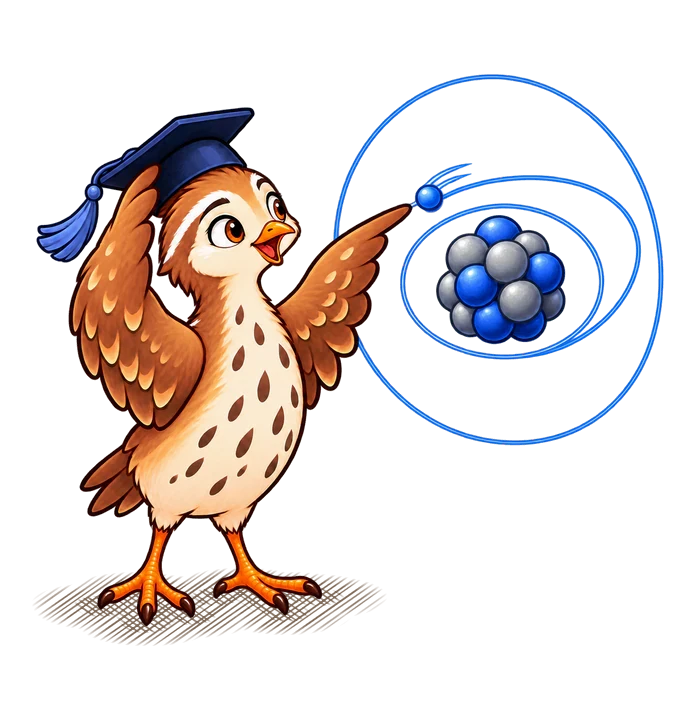

重元素：相对论效应与赝势
薛定谔方程不包含相对论，对轻原子这并不明显。但重原子的内层电子运动速度可与光速相比：其质量增大，s 壳层收缩，化学性质随之改变——金的颜色、液态汞、铅酸电池的工作。计算中有两种处理方式：用赝势代替内层电子，或采用相对论哈密顿量。
需要理解的要点
- 类氢原子 1s 电子的平均速度为 Z 个原子单位，即 v/c = Z/137：金为光速的 0.58。
- 质量增大为 γ = 1/√(1 − v²/c²) 倍，s 轨道收缩：金的 1s 小 18%，价层 6s 也收缩并被稳定。
- 赝势（ECP）用拟合自相对论原子计算的势代替内层电子：在 def2 中，Rb–Xe 为 28 个电子，Cs–La 为 46 个，Hf–Rn 为 60 个。
- 不用 ECP 时，相对论效应通过哈密顿量引入（DKH2、ZORA、X2C），需配专门的全电子基组，例如 ORCA 中的 DKH-def2 或 ZORA-def2。
模型的适用范围： 类氢 1s 电子，点核
- 计算的是什么
- 核电荷 Z 场中单个 1s 电子的速度、质量增大、半径收缩和狄拉克能级；def2 赝势核芯的大小。
- 采用了哪些近似
- 单电子，无其他电子的屏蔽；点核；半径 ∝ 1/m（玻尔估计）；多电子原子的价层仅作定性描述。
- 能得出什么结论
- 为什么相对论对重元素重要、赝势起什么作用——可以；价层和化学性质上的效应大小只能由带 ECP 或相对论哈密顿量的计算给出。
重原子的 1s 电子
元素
核电荷 Z
贯穿周期表的收缩
r(相对论)/r(非相对论) = √(1 − (Z/137)²)：Z ≈ 30 以下效应小于 5%，第六周期从 8%（Cs）到 22%（Rn）。1s 的狄拉克能量：E = c²(√(1 − (Z/c)²) − 1)，薛定谔能量 −Z²/2 Eh。
def2 赝势
元素
| 方法 | 作用 | 设置方式（ORCA） |
|---|---|---|
| ECP + def2 | 核芯为势，价电子显式处理；已包含标量相对论效应 | ! B3LYP D3BJ def2-TZVP |
| DKH2 | 全电子，二阶 Douglas–Kroll–Hess 相对论哈密顿量 | ! DKH DKH-def2-TZVP SARC/J |
| ZORA | 全电子，零阶正规近似 | ! ZORA ZORA-def2-TZVP SARC/J |
| X2C | 全电子，精确二分量变换 | ! X2C x2c-TZVPall |
关键词依据 ORCA 6 手册；在 Gaussian 中 def2 赝势随 Def2TZVP 基组一起加入，DKH2 用 Int=DKH。对 4d–5d 金属和卤素 I、At，ECP 通常已足够；自旋–轨道效应（例如重 p 区元素）需要二分量计算。基组 DKH-def2 和 ZORA-def2 只有 H–Kr：重原子的基组需单独指定，例如金用 %basis NewGTO Au "SARC-ZORA-TZVP" end end（DKH 用 SARC-DKH-TZVP）；x2c-TZVPall 覆盖 H–Rn。
检验你的知识
页面练习：先在页面上操作，再选择答案——答案会立即检查。
选择金（Z = 79）。1s 电子以光速的多少运动？
v/c
0.58：v/c = Z/137 = 79/137。此时质量增大 γ = 1.22 倍。
金的 1s 半径比非相对论值小百分之几？
收缩，%
小 18%：√(1 − 0.58²) = 0.82。价层 6s 也收缩——它更靠近核、对电子束缚更紧，这就是金“贵”的原因。
def2 基组中的金：赝势中有多少电子，显式处理多少？
核芯 60 个（1s–4f），显式 19 个（5s、5p、5d、6s）：Hf–Rn 的 Stuttgart–Cologne 赝势。
def2-TZVP 中的溴（Z = 35）——用不用赝势？
不用 ECP：def2 中 Kr 及之前的元素都是全电子的。赝势从铷开始（核芯 28 个电子）。